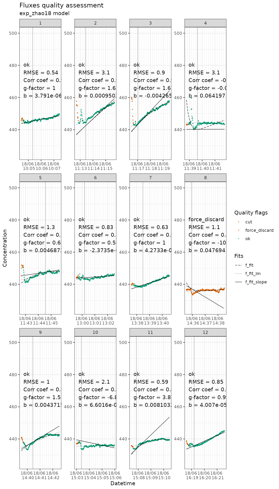
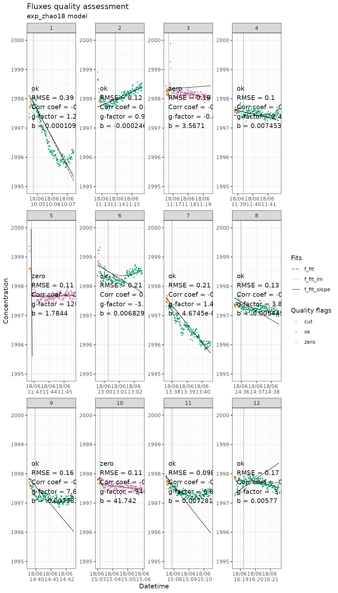

In this example we will process the raw_twogases dataset
which contains both CO2 and CH4 concentrations
measured simultaneously.
The
aim is a single dataset of fluxes in which the CH4 fluxes
where also discarded when the CO2 fluxes were discarded.
The concept is that we will treat the dataset twice, once for each
gas, and then join them again in the end. Because f_fluxid
is produced in chronological order based on start datetime in
field_record, the fluxes measured at the same time have the
same f_fluxid.
First we use flux_match to slice the raw concentration
data and attribute a unique ID to each measurement. At this stage it
does not matter which concentration columns we use.
library(fluxible)
library(tidyverse)
conc_twogases <- flux_match(
raw_twogases,
twogases_record,
datetime,
start,
co2_conc,
startcrop = 10,
measurement_length = 180,
ratio_threshold = 0.5,
time_diff = 0
)Then we fit a model to the raw data for each gas:
slopes_twogases_co2 <- flux_fitting(
conc_twogases,
co2_conc,
datetime,
fit_type = "exponential"
)
#> Cutting measurements...
#> Estimating starting parameters for optimization...
#> Optimizing fitting parameters...
#> Calculating fits and slopes...
#> Done.
slopes_twogases_ch4 <- flux_fitting(
conc_twogases,
ch4_conc,
datetime,
fit_type = "exponential"
)
#> Cutting measurements...
#> Estimating starting parameters for optimization...
#> Optimizing fitting parameters...
#> Calculating fits and slopes...
#> Done.Same with the quality, we do it once for each gas:
flag_twogases_co2 <- flux_quality(
slopes_twogases_co2,
co2_conc,
force_discard = "8" # there is a peak at the start that looks like an error
)
#>
#> Total number of measurements: 12
#>
#> ok 11 92 %
#> force_discard 1 8 %
#> discard 0 0 %
#> zero 0 0 %
#> start_error 0 0 %
#> no_data 0 0 %
#> force_ok 0 0 %
#> force_zero 0 0 %
flag_twogases_ch4 <- flux_quality(
slopes_twogases_ch4,
ch4_conc,
ambient_conc = 2000 # the default is for CO2
)
#>
#> Total number of measurements: 12
#>
#> ok 9 75 %
#> zero 3 25 %
#> discard 0 0 %
#> force_discard 0 0 %
#> start_error 0 0 %
#> no_data 0 0 %
#> force_ok 0 0 %
#> force_zero 0 0 %We check the fits with flux_plot:
flag_twogases_co2 |>
flux_plot(
co2_conc,
datetime,
f_ylim_upper = 500,
f_ylim_lower = 425,
y_text_position = 460
)
#> Plotting in progress
flag_twogases_ch4 |>
flux_plot(
ch4_conc,
datetime,
f_ylim_upper = 2000,
f_ylim_lower = 1995,
y_text_position = 1997
)
#> Plotting in progress
After calculating the fluxes, we need to rename the
f_flux column to avoid confusion when joining the
datasets:
fluxes_twogases_co2 <- flux_calc(
flag_twogases_co2,
f_slope_corr,
datetime,
temp_air,
conc_unit = "ppm",
flux_unit = "mmol",
chamber_volume = 6.3,
tube_volume = 0.01,
atm_pressure = 1,
plot_area = 0.31,
cols_keep = "f_quality_flag" # to use the flags of CO2 to discard CH4 fluxes
) |>
rename( # to avoid any confusion, we rename the flux column
flux_co2 = "f_flux"
) |> # and we remove the slope one
select(!f_slope_corr)
#> Cutting data according to 'keep_arg'...
#> Averaging air temperature for each flux...
#> Creating a df with the columns from 'cols_keep' argument...
#> Calculating fluxes...
#> R constant set to 0.082057
#> Concentration was measured in ppm
#> Fluxes are in mmol/m2/h
fluxes_twogases_ch4 <- flux_calc(
flag_twogases_ch4,
f_slope_corr,
datetime,
temp_air,
conc_unit = "ppb", # ch4 is measured in ppb
flux_unit = "micromol", # we want a flux in umol/m2/h
chamber_volume = 6.3,
tube_volume = 0.01,
atm_pressure = 1,
plot_area = 0.31
) |>
rename( # to avoid any confusion, we rename the flux column
flux_ch4 = "f_flux"
) |> # and we remove the slope one
select(!f_slope_corr)
#> Cutting data according to 'keep_arg'...
#> Averaging air temperature for each flux...
#> Calculating fluxes...
#> R constant set to 0.082057
#> Concentration was measured in ppb
#> Fluxes are in micromol/m2/hThen we can join the datasets. If the final dataset ends up being
longer, it probably means that some values in columns that should be
equal are not, adding rows (f_temp_air_ave for example). It
is a good way to check that the two gases have been processed
similarly.
fluxes_twogases <- left_join(
fluxes_twogases_co2,
fluxes_twogases_ch4,
by = c(
"f_fluxid",
"f_temp_air_ave",
"datetime",
"f_model",
"f_volume_setup"
)
) |>
mutate( # we discard the CH4 fluxes based on CO2 fluxes quality flags
flux_ch4 = case_when(
f_quality_flag != "ok" ~ NA,
TRUE ~ flux_ch4
)
)
str(fluxes_twogases) # Et voilà!
#> tibble [12 × 8] (S3: tbl_df/tbl/data.frame)
#> $ f_quality_flag: chr [1:12] "ok" "ok" "ok" "ok" ...
#> $ f_fluxid : Factor w/ 12 levels "1","2","3","4",..: 1 2 3 4 5 6 7 8 9 10 ...
#> $ f_temp_air_ave: num [1:12] 13.4 16.5 17.1 14.4 15 ...
#> $ datetime : POSIXct[1:12], format: "2024-06-18 10:04:37" "2024-06-18 11:12:52" ...
#> $ f_volume_setup: num [1:12] 6.31 6.31 6.31 6.31 6.31 6.31 6.31 6.31 6.31 6.31 ...
#> $ flux_co2 : num [1:12] 0.08292 0.38505 0.43518 0.00108 0.06371 ...
#> $ f_model : chr [1:12] "exp_zhao18" "exp_zhao18" "exp_zhao18" "exp_zhao18" ...
#> $ flux_ch4 : num [1:12] -0.04873 0.01165 0 -0.00649 0 ...
#> - attr(*, "fit_type")= chr "exp_zhao18"In this example we calculated the fluxes for two gases measured
simultaneously by repeating the process for each gas, and in the end we
joined them and applied a rule that discarded the fluxes of one gas
based on the quality flags of the other. It is of course totally
possible to apply other rules, or to just keep the fluxes as provided by
fluxible.